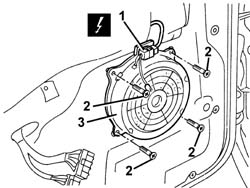

5580T11 BOSE SOUND SYSTEM FRONT SPEAKER (ONE), LH OR RH - R R WITH DOOR PANEL REMOVED
- Path
- Procedures > 55 ELECTRICAL EQUIPMENT > 5580 SPECIAL ACCESSORIES > 5580T BOSE SOUND SYSTEM > 5580T11 BOSE SOUND SYSTEM FRONT SPEAKER (ONE), LH OR RH - R R WITH DOOR PANEL REMOVED
- Kind
- repair procedure (removal / refitting; the operation number is the code)
- Applies to
- all engines; all production periods
- Interactive page
- https://sloeber94.github.io/elrnDB-aGt/en/#/125001748
Applies to: all engines; all production periods
 Removing
Removing
 Refitting
Refitting- Open the bonnet.
- Disconnect the negative battery terminal.
- Work carefully.
- Disconnect the electrical connection.
- Undo the bolts.
- Keep the speaker.

Applies to: all engines; all production periods
Refitting
Removing- Check that the speaker is not damaged.
- Position the speaker.
- Tighten the bolts.
- Connect the electrical connection.
- Connect the negative battery terminal.
- Close the bonnet.
- Check that the speaker is working.